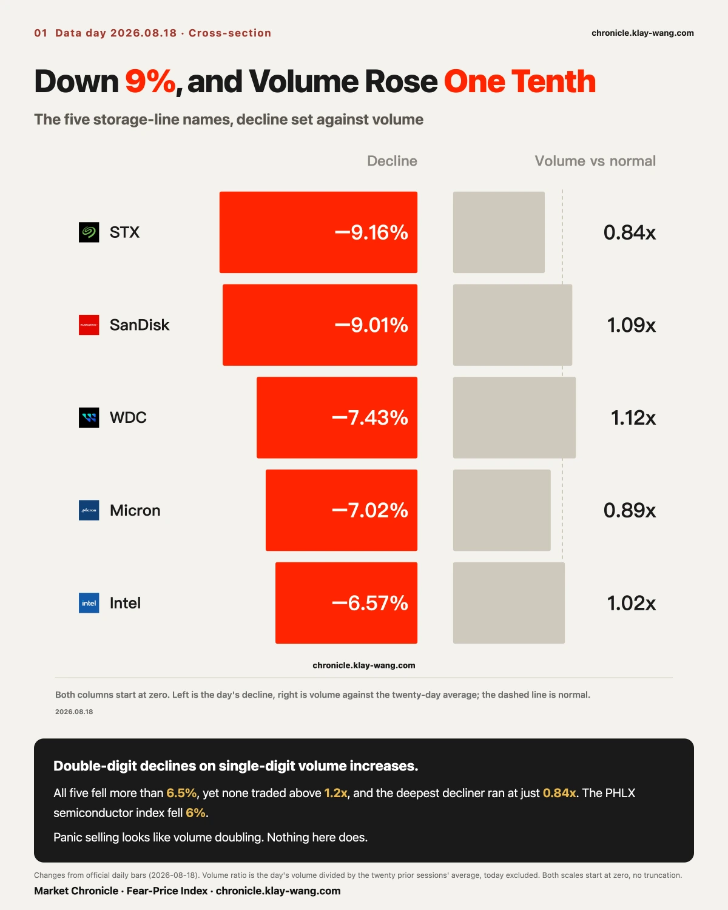
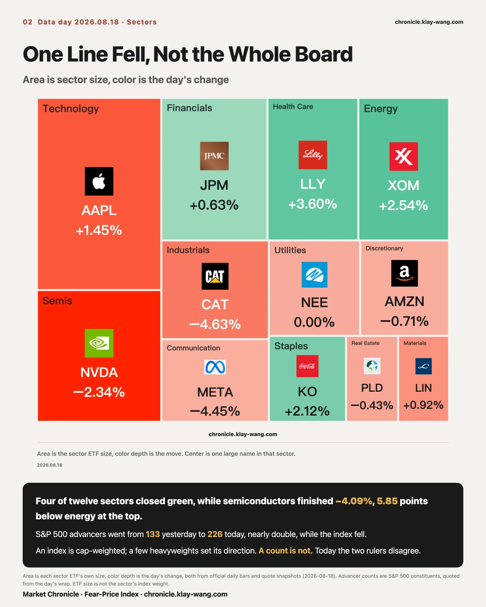
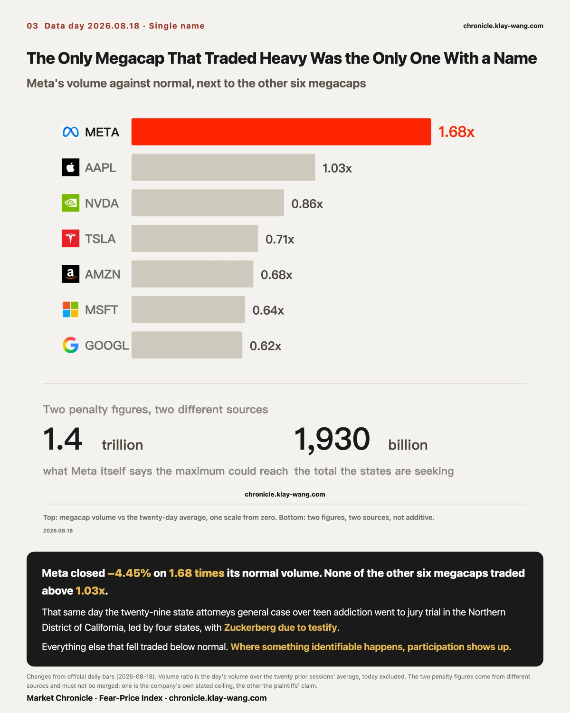
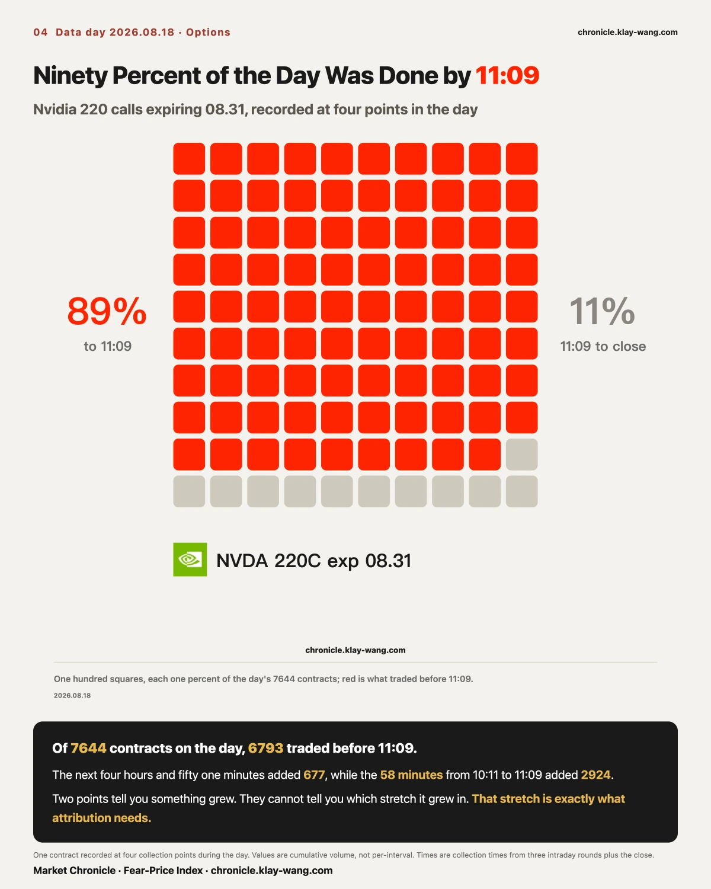
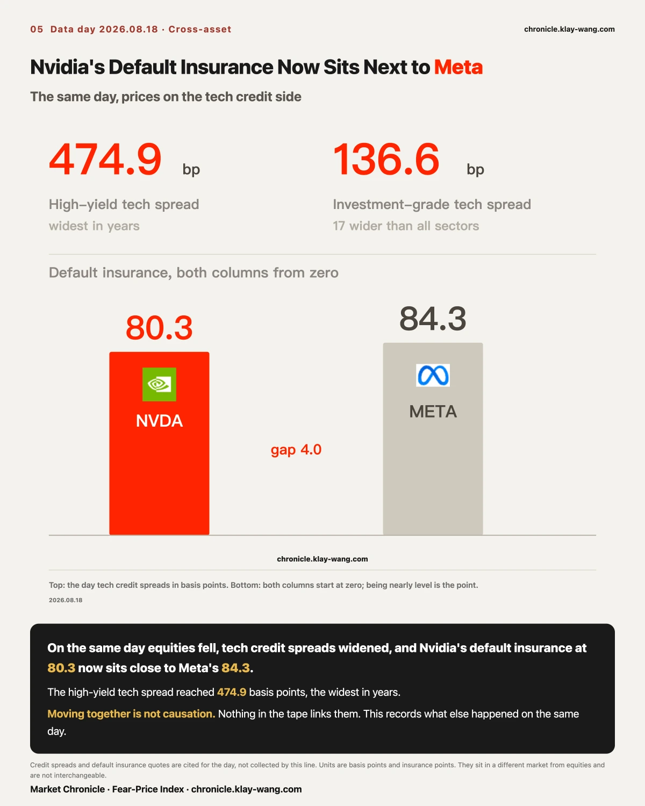
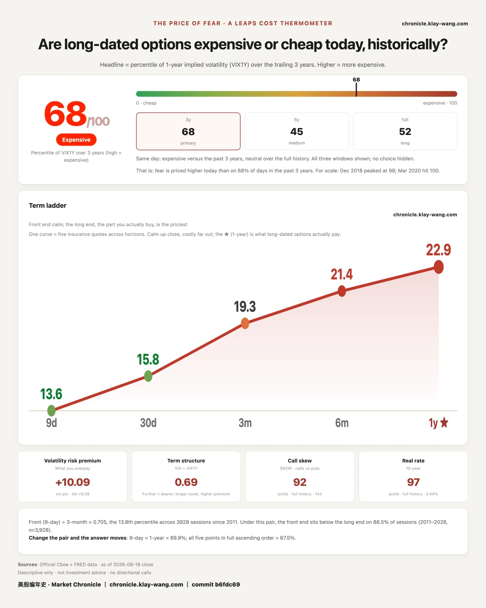

The semiconductor ETF closed down 4.09%. Four storage names plus Intel all fell more than 6.5%, with Seagate down 9.16%. On the same day, not one of them traded above 1.2 times its usual volume.
The decline was several times the volume: a name down 9% traded barely a tenth above normal, while Microsoft, up 0.27%, ran at 0.64x. Alphabet ran 0.62x, Amazon 0.68x, Tesla 0.71x. The only clear expansion anywhere was Meta at 1.68x.
One Nvidia call expiring at the end of August traded 7,644 contracts on the day. Ninety percent of that was done before 11:09 in the morning. The following five hours added roughly six hundred.

Today is easy to write up as money leaving technology. The data does not support that sentence.
Leaving is an action, and actions leave trades behind. Volume across the market was lighter than usual today, and the names that fell hardest were the lightest of all. Put those two facts together and the shape is different: this is not selling pressure, it is the absence of bids.

Seagate −9.16% on 0.84x volume. SanDisk −9.01% on 1.08x. Western Digital −7.43% on 1.12x. Micron −7.02% on 0.89x. Intel −6.58% on 1.02x. Double-digit declines on single-digit volume increases.
At the sector level, XLK fell 2.47% on 1.05x and SMH fell 4.09% on 1.03x. Among the index funds, QQQ ran hot at 1.25x; SPY was 0.95x. Thirteen of thirty-two tracked names did trade above average today, so the claim that holds is not that the whole market went quiet, it is that the names that fell hardest never expanded.
Three of the Magnificent Seven closed green. Apple gained 1.45% on 1.03x volume, the only green name with normal participation behind it. Microsoft rose 0.27% on 0.64x and Alphabet 0.06% on 0.62x, both around six tenths of usual volume. Those two were not bought up. Nobody touched them.
Our read: this was not an exit, it was the bid stepping away. A sale needs a buyer on the other side. A double-digit decline on a single-digit volume increase says the selling itself was not heavier than usual. What was missing was the buying. The price slid down a thin book rather than being pushed down by size.
This can be disproven. If we see the same magnitude of decline on 1.5x volume in the next two sessions, then the real selling had not yet shown up today.

Nvidia 2026-08-31 220 calls, recorded at four points today: 3,869 contracts at 10:11, 6,793 at 11:09, 6,967 at 11:30, and 7,644 at the close. Ninety percent of the day was done by 11:09. The remaining four hours and fifty-one minutes added 677.
At 11:30 we had only the first and third of those points, and we wrote that the shape was steady accumulation rather than one burst. With two points, that was a fair reading. The closing point rewrote it: the real shape was a morning burst followed by silence.
Two points tell you that something grew. They cannot tell you which stretch it grew in. That stretch is exactly what attribution needs. We are not editing the original line; the correction lives here.

The six heaviest strikes by notional premium, all expiring 2026-08-28: Nvidia 220 calls at $9.41M, SanDisk 1700 calls at $8.11M, Micron 1000 calls at $7.63M, SanDisk 1600 puts at $7.13M, Nvidia 232.5 calls at $6.88M, Micron 935 calls at $6.73M. These are notional figures, revalued at the closing price, not cash anyone is known to have paid.
The heaviest strike and the one that most resembles a new position are not the same strike. The Nvidia 220 call carries the largest notional, but its 13,831 contracts sat on 16,714 of existing open interest, a ratio of 0.83, which looks more like turnover at a crowded strike than a new bet. The SanDisk 1700 call traded 1,179 against 386 of open interest, a shape closer to something being built.
We are not quoting any volume-to-open-interest multiples today. Open interest settles overnight, so nothing opened today is in the denominator yet, and the ratio grows mechanically with volume.

Broadcom term inversion widened again, from 1.38 to 1.44, the widest of six sessions. The sequence reads 0.29, 0.30, 0.78, 0.85, 1.38, 1.44. More notable: of nineteen names, Broadcom is now the only one still inverted.
The SpaceX inversion lasted exactly one day, as we said it might. Last issue we wrote that if it closed back the next day, that print was a single point and did not stand. Today it is −0.84. It closed back. We will not cite it as a second inverted name again.
Storage as a gap-determined move: half true. Micron gapped −5.40 of its −7.02, or 77% of the day. SanDisk gapped −6.12 of its −9.01, or 68%. Yesterday Micron was 69% and SanDisk only 41%. Micron holds on both days; SanDisk does not hold on yesterday. We record it as partly true.
Reddit: the news was priced on announcement day. The 08.14 announcement gapped 11.17 points into a 12.63% day, leaving 1.31 for the session itself. Today, the effective date, gapped 0.97 and closed −3.80.
Meta fell 4.45% on 1.68x volume, the only megacap with meaningful volume expansion today, and the only one pointing at a specific event: on 18 August, the twenty-nine state attorneys general case over teen addiction went to jury trial in the Northern District of California.
Two numbers, two different sources, not to be merged. $1.4 trillion is what Meta itself has said the maximum penalty could reach if it loses, close to its own market value. Roughly $193 billion is the total the states are seeking, disclosed by California's outside counsel, and compared in press coverage to the $206 billion tobacco settlement of 1988. Meta calls the claims unfounded and the monetary demand badly out of proportion.
We are not writing that the market is pricing a verdict. That would be a guess.
Not one of the five hardest-hit names traded above 1.2 times its usual volume. Panic comes with volume, and these declines did not.
Microsoft and Alphabet closed green on six tenths of their normal volume. They were not bought up. Nobody touched them.
Ninety percent of one contract's daily volume was done before 11:09. Two points tell you something grew; they cannot tell you where it grew.